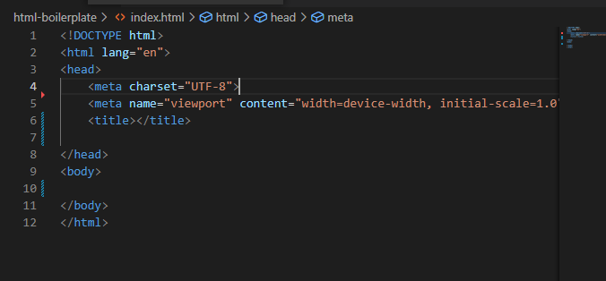

Learning HTML: Home
Website building blocks: HTML, CSS, Javascript

Web projects should be organized with the following hierarchy
index.html at the root level as home page
css folder at the root level for CSS files
img folder at the root level for Image files
js folder at the root level for JavaScript files
pags folder at the root level for web page files
Index boilerplate

Text Formats
Heading 1
Heading 2
Heading 3
Heading 4
Heading 5
Heading 6
Text to be kept together is as paragraph are wrappped in p tags.
The text that is important is put between strong tags.
Emphasized text can use the em tags to emphasize in italics.
Text can be both italic and bold by wrapping in both em and strong tags.
Click me to see my lists!
Click here to go to the Odin Project